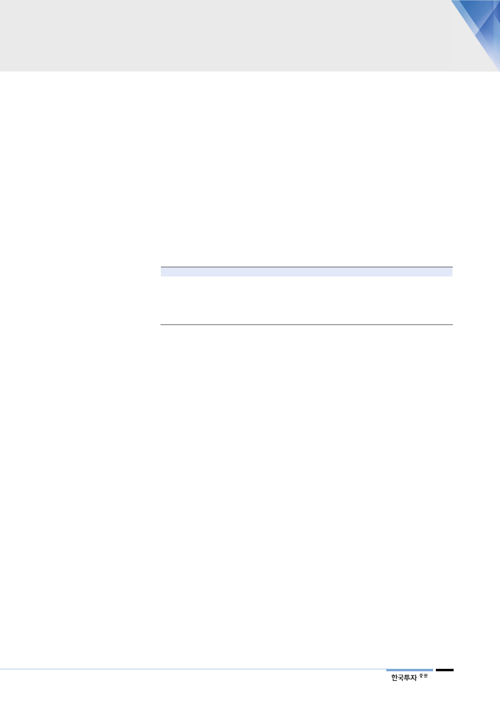

1분기 바닥, 실적 개선 시작
이익 가시성 높아질 것
우리는 곧 이러한 요인들이 해소돼 주가가 re-rating될 것으로 판단한다. 1분기
를 바닥으로 원전이용률이 2년 만에 회복되기 시작, 실적 개선으로 이어질 것이
다. 또한 5월까지 9기의 원전 재가동이 기대돼, 이익 가시성이 높아질 것이다. 보
수적으로 봐도 19년 ROE는 5.8% 수준으로 정상화될 것이라는 점에서, 한전의
저평가 매력은 점차 높아질 것이다. 게다가 신정부의 탈원전/석탄에도 2023년까
지 원전과 석탄은 늘어나며, 우호적인 환율, 석탄가격 하향 안정화가 예상된다는
점에서, 중장기적 그림도 좋은 상황이다. 또한 전력거래 패러다임 전환(재생에너
지 확대, ESS 활성화 등)을 위해 전기요금제도 개편 및 구입비연동제 도입 당위
성이 높아져, 한전에게 긍정적인 상황이 전개될 전망이다. 지난 4분기 적자전환으
로 1분기 실적에 큰 기대는 없다. 아쉬울 1분기 실적에 실망하기보다는, 지금부
터 시작되는 긍정적 변화에 초점을 맞춰야 한다.
<표 1> 기존 목표주가 48,000원 유지
내용
자본비용(%)
시장 기대수익률(%)
Target PBR(배)
2018F BPS(원)
목표주가(원)
값
4.4
10.5
0.42
114,236
48,000
note
한국전력의 2018 년 평균 예상 투자보수율
코스피 2018 년 PER 9.5 배의 역수
자본비용 / 시장 기대수익률
주: 한전의 자본비용은 정부가 정해준 적정투자보수율(WACC개념)
자료: 한국전력, 한국투자증권
3